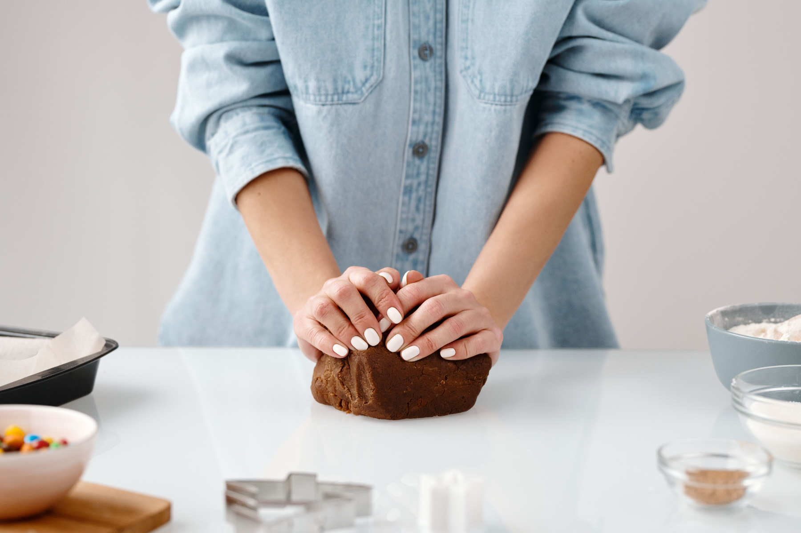

Schackrutor

Schackrutor är klassiska småkakor med ett dekorativt rutmönster av ljus och chokladsmakande mördeg. Kakorna blir spröda och ser mycket läckra ut på kakfatet. De imponerar med sitt utseende men är väldigt enkla att baka.
Ca 50 kakor
Ingredienser
- 200 g osaltat smör
- 1 dl strösocker
- 4,5 dl vetemjöl
- Ljus deg: 2 tsk vaniljsocker
- Mörk deg: 2 msk kakao
Gör så här:
- Ta fram smöret så att det hinner bli rumsvarmt.
- Vispa ihop smör och socker till en jämn smet.
- Tillsätt vetemjöl, lite i taget, och fortsätt röra tills det blir stora smulor.
- Dela degarna i två lika stora delar.
- Arbeta in kakaon i den ena delen och vaniljsocker i den andra så att du får en ljus och en mörk deg.
- Dela degarna i två delar så du får två ljusa och två mörka delar.
- Rulla ut till längder och tryck till dem mot bakbordet så längderna får platta kanter. Lägg dem tätt ihop, med två ovanpå de andra så de bildar ett litet schackmönster.
- Låt vila i kylen 1-2 timmar.
- Sätt ugnen på 200 °C.
- Ta fram längden och skär ca 3-4 mm tjocka skivor.
- Lägg kakorna på en plåt med bakplåtspapper och grädda mitt i ugnen i ca 8-10 minuter.